串口是干什么的
单片机和别的设备要交换数据，得有一条两边都认的通道。串口是其中最省事的一种：两根信号线，一根发，一根收。
名字里的方向是站在自己这一侧说的。Tx 是本机往外发，Rx 是本机往里收。所以接线的时候不能照着名字对，要让我的发接到你的收上。
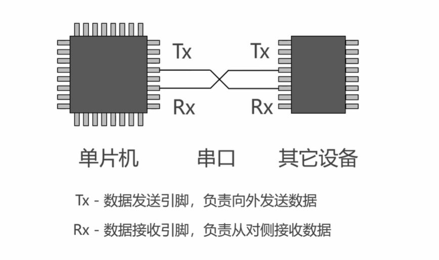
串口没有时钟线。发送方只管按自己的节奏把电平推上线，接收方要在对的时刻去采样，靠的是双方事先约定同一个速度 —— 这件事放在第四节讲。
一帧数据的结构
数据是一位一位传的，为了让接收方知道从哪里开始、到哪里结束，每一帧都要加上起止标记。
线空闲的时候停在高电平。要开始发，发送方先把线拉低，保持一位的时间，这一位就是起始位。接收方等的就是这个下降沿。
数据位与停止位
起始位之后是数据位，低位先行。要发十进制 100，先转成二进制 01100100，补够 8 位；真正上线发送的顺序是 0 0 1 0 0 1 1 0，和写在纸上的方向相反。
数据位走完，发送方把线拉回高电平，保持一段时间，这就是停止位。长度可以设 0.5 位、1 位、1.5 位或 2 位，平时都用 1 位。停止位结束后线回到空闲，等下一帧。
位宽怎么定
习惯上一个字节算一帧，所以 8 位数据、不带校验最常见。九位、带校验这些组合也能用，只是数据位数就不整齐了。
| Word Length | Parity | 实际数据位 | 一字节？ |
|---|---|---|---|
8 Bits | None | 8 | 正好 |
8 Bits | Even / Odd | 7 | 差一位 |
9 Bits | None | 9 | 多一位 |
9 Bits | Even / Odd | 8 | 正好 |
CubeMX 的 Word Length 是把校验位算在内的。所以 8 位无校验就是 8 个数据位；开了校验还想凑满一个字节，得选 9 位。
校验位
数据位后面那一位，有时候不装数据，用来让接收方发现这一帧传错了。
奇校验的规则是：整个数据位里 1 的个数必须是奇数。要发十进制 85，二进制 01010101，数一遍有 4 个 1，是偶数，于是校验位填 1，凑成 5 个。线上先发最低位，所以图上依次是 1 0 1 0 1 0 1 0。
接收方收到以后重数一遍。中间那一行里有一位在途中从 1 翻成了 0，1 的总数变成偶数，和约定不符，这一帧就算坏了。
偶校验反过来，要求偶数个 1（最后一行），其余一样。
它只管查错：数 1 的个数只能发现奇数个位翻转。两位同时翻，1 的个数还是偶数，它数不出来。校验位也不会告诉你哪一位错了，更不会修。想可靠传数据，得用 CRC 之类的办法。
波特率
每秒钟传多少位。它决定了每一位在线上占多长时间，也决定了两边能不能对上话。
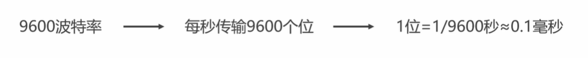
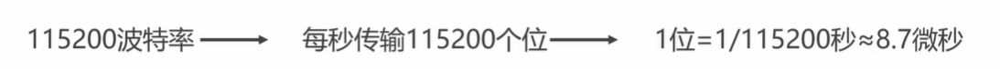
串口线上只有高低两种电平，一个符号就是一位，所以这里波特率和比特率是同一个数。笔记里那个换算 —— 比特率等于波特率乘每个符号携带的比特数 —— 是给多电平调制用的，单极性串口用不上。
收发双方必须用同一个值。两边对不上，接收方的采样点会一位接一位地偏，偏到最后采到的就不是原来的数据了。这时候收到的乱码是有规律的，因为偏差的比例是固定的。
顺带算一下：115200 8N1 一帧是 10 位（1 起始 + 8 数据 + 1 停止），一秒最多约 11520 个字节。笔记里出现的那个 11520，大概就是从这儿来的。
UART、USART 与两种工作方式
STM32 的串口外设分两类，区别只在于支不支持那根时钟线。
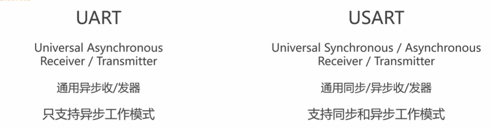
异步
收发双方没有共享的时钟线。传输以字符为单位，每个字符前后各加起始位和停止位；接收端抓到起始位之后，按约定的波特率在这一个字符里采样，下一个字符来了再重新对齐一次。
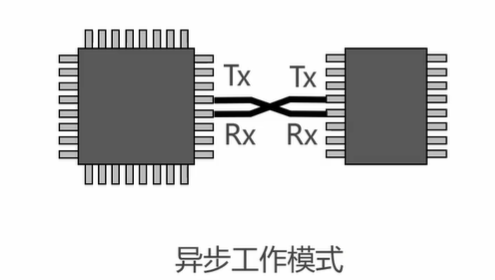
同步
多一根 CK，收发双方踩着同一个时钟一位一位地走。数据可以按块连着发，不必每个字符都加起止位。
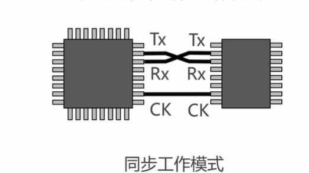
平时说的"串口"基本都是异步那一种。要用同步模式，接线时得把 CK 也接过去，两边还得是同一个时钟源。
实验：把数据发到电脑上
电脑上没有 TTL 电平的串口，中间垫一个 USB 转 TTL 模块。板子这头用 USART1。
电脑那头
用一个串口调试助手，笔记里用的是 UartAssist。打开端口之后它既负责收，也负责发，同一份数据可以按 HEX 看，也可以按 ASCII 看。
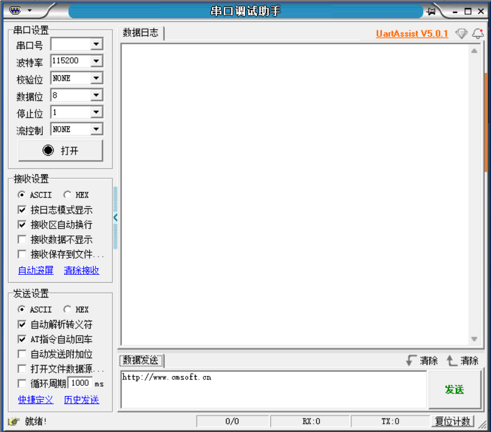
CubeMX 配置
Connectivity 下面能看到三个串口：USART1、USART2、USART3。这个实验用第一个。
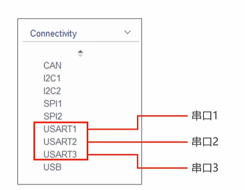
Mode 选 Asynchronous，也就是异步。选了它，下面才出现波特率、字长这些参数。
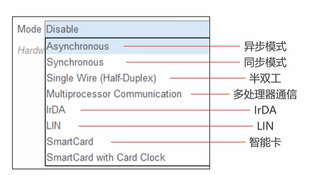
参数四项：波特率 115200，字长 8 Bits (including Parity)，校验 None，停止位 1。合起来就是常说的 8N1。数据方向保持默认的 Receive and Transmit。
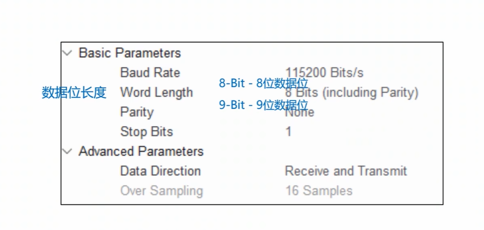
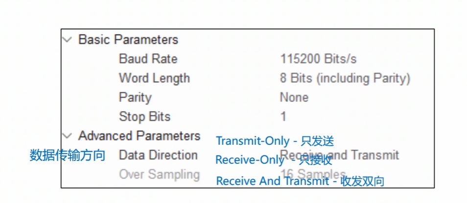
| 参数 | 这项实验的取值 | 意思 |
|---|---|---|
| Baud Rate | 115200 | 一秒 115200 位，两边必须一致 |
| Word Length | 8 Bits | 含校验位在内的总位数 |
| Parity | None | 不带校验，8 位全是数据 |
| Stop Bits | 1 | 一帧末尾保持一位高电平 |
| Data Direction | Receive and Transmit | 收发都要 |
引脚是 CubeMX 顺手分配的：PA9 是 USART1 的发送脚，PA10 是接收脚。
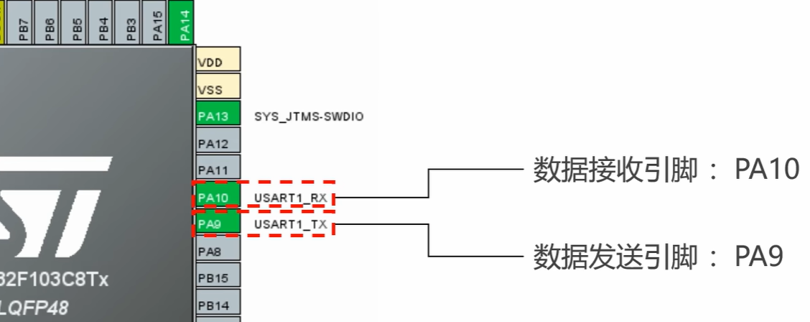
到 System Core 的 GPIO 里能看到它们被改成了复用功能：PA9 是 Alternate function Push Pull、高速，PA10 是 Input mode、不上拉不下拉。
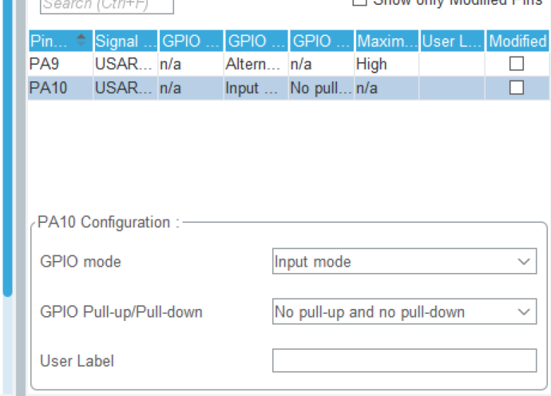
接线
USB 转 TTL 模块一头是 USB，插电脑；另一头出 TXD、RXD、GND 三根线，电平是单片机能直接读的 TTL。
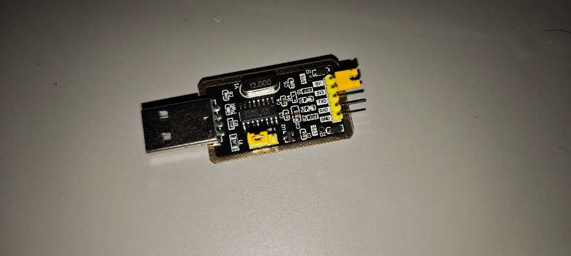
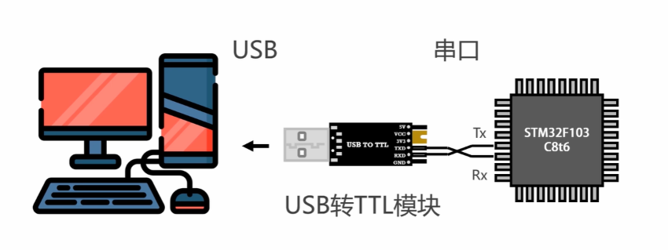
板子已经由 ST-Link 供电，模块上的 3V3 和 5V 不用接。剩下三根：模块的 RXD 接 PA9，TXD 接 PA10，GND 对 GND。
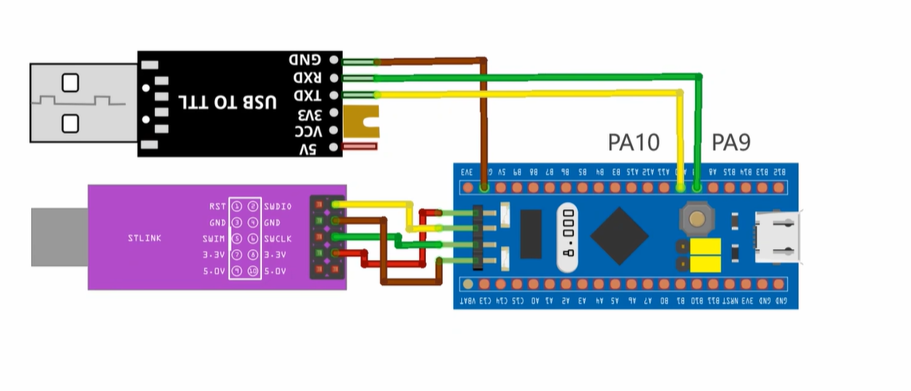
代码
工程生成好，main.c 里已经摆好了初始化：HAL_Init()、SystemClock_Config()、MX_GPIO_Init()，串口还多一行 MX_USART1_UART_Init()。串口句柄叫 huart1，之后每次调用都要把它传进去。
发送只用到这一个函数：
HAL_StatusTypeDef HAL_UART_Transmit(UART_HandleTypeDef *huart,
uint8_t *pData,
uint16_t Size,
uint32_t Timeout)- huart
- 串口句柄的指针，这里是
&huart1 - pData
- 要发的数据，
uint8_t类型的指针 - Size
- 发多少个字节
- Timeout
- 超时时间，单位毫秒；填
HAL_MAX_DELAY表示一直等到发完
返回值说明这一趟的结果：HAL_OK 成功，HAL_ERROR 出错，HAL_BUSY 串口正忙，HAL_TIMEOUT 超时。
实验要发四样东西：一个字节 0x5A、五个数字 1 到 5、一个字符 'a'、一句话 "Hello World!"。前两个本身是 uint8_t，后两个是 char，得转成 uint8_t 指针再传。
/* USER CODE BEGIN 2 */
uint8_t byteNumber = 0x5a;
uint8_t byteArray[] = {1, 2, 3, 4, 5};
char ch = 'a';
char *str = "Hello World!";
HAL_UART_Transmit(&huart1, &byteNumber, 1, HAL_MAX_DELAY);
HAL_UART_Transmit(&huart1, byteArray, 5, HAL_MAX_DELAY);
HAL_UART_Transmit(&huart1, (uint8_t *)&ch, 1, HAL_MAX_DELAY);
HAL_UART_Transmit(&huart1, (uint8_t *)str, strlen(str), HAL_MAX_DELAY);
/* USER CODE END 2 */长度这里容易写错：字符串用 strlen(str)，数的是字符个数，不含结尾的 \0，12 个字节。写成 sizeof(str) 拿到的是指针本身的大小，在 32 位机器上是 4，只会发出去前四个字母。
收到的数据
电脑端把接收切成 HEX，收到这么一串：
5A 01 02 03 04 05 61 48 65 6C 6C 6F 20 57 6F 72 6C 64 21
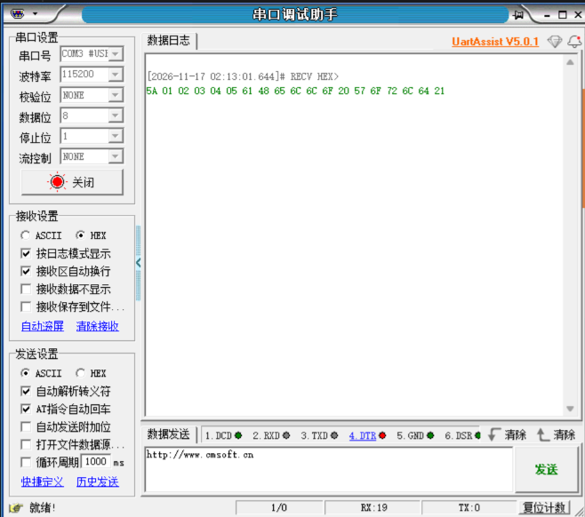
对着查：5A 是 'Z'，01 到 05 是那五个数字，61 是 'a'，最后 12 个字节 48 65 6C 6C 6F 20 57 6F 72 6C 64 21 是 Hello World! 的 ASCII 码。
同一份数据切到 ASCII 显示，变成这样：
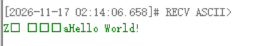
同一串字节换个看法，'Z'、'a' 和 Hello World! 都在，五个数字没了形。数据一个都没少，看串口数据还是 HEX 那一边更可靠。
速查与易错点
发一个字节要交代的四件事
| 参数 | 填什么 |
|---|---|
huart | &huart1，用哪个串口就传哪个句柄 |
pData | 数据地址；字符和字符串要强转成 uint8_t * |
Size | 字节数；字符串用 strlen()，别用 sizeof |
Timeout | HAL_MAX_DELAY 一直等，或填毫秒数 |
接线对应
| 模块这头 | 板子这头 | 方向 |
|---|---|---|
RXD | PA9（USART1_TX） | 板子发，模块收 |
TXD | PA10（USART1_RX） | 模块发，板子收 |
GND | GND | 共地，电平才有同一个参考 |
容易踩的坑
- 照着名字接线。TX 接 TX，两边都在说，谁也没在听。要交叉。
- 两边波特率不一样。收到的是有规律的乱码，不是完全没数据 —— 数据在动，只是被采错了位置。
- 忘了共地。只接两根信号线，电平没有共同参考，读出来就是随机的。
- char 直接传给
HAL_UART_Transmit。形参是uint8_t *，不加强转编译会报警告，行为也不可靠。 - 字符串用
sizeof算长度。拿到的是指针大小，一般是 4，只发出去前四个字符。 - 把校验位当纠错。它只数 1 的个数，能发现奇数个位翻转，发现不了偶数个，也不会修。
- 8 位加校验。校验位占掉一位，数据只剩 7 位，一个字节装不下。要校验就选 9 位。
- 把显示方式当成数据不同。HEX 和 ASCII 是同一串字节的两种读法，数据本身没变。